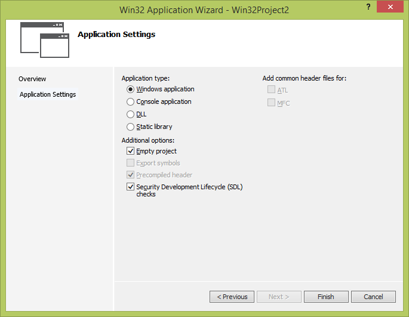
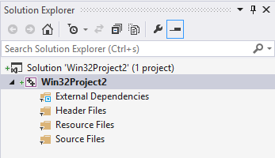
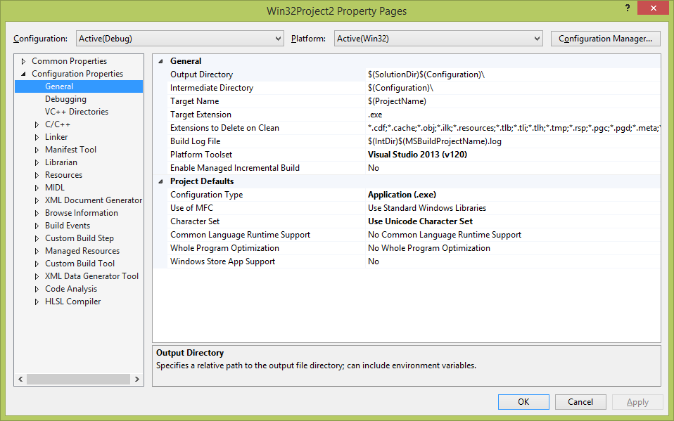
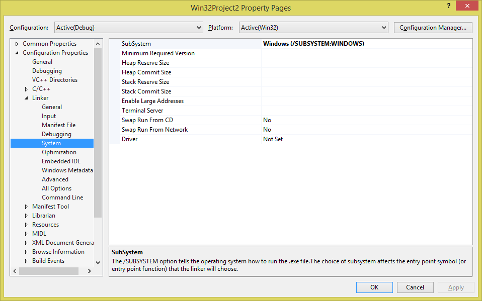
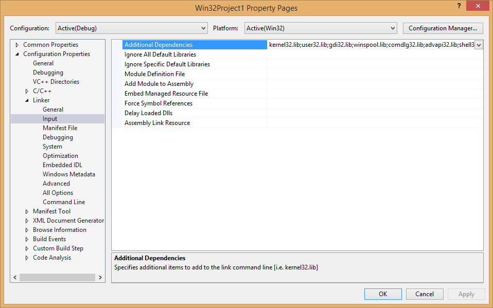
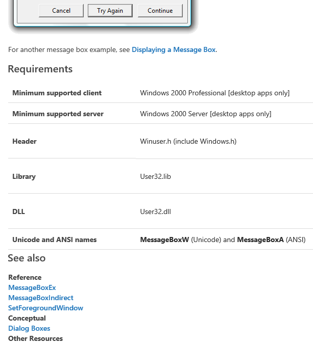
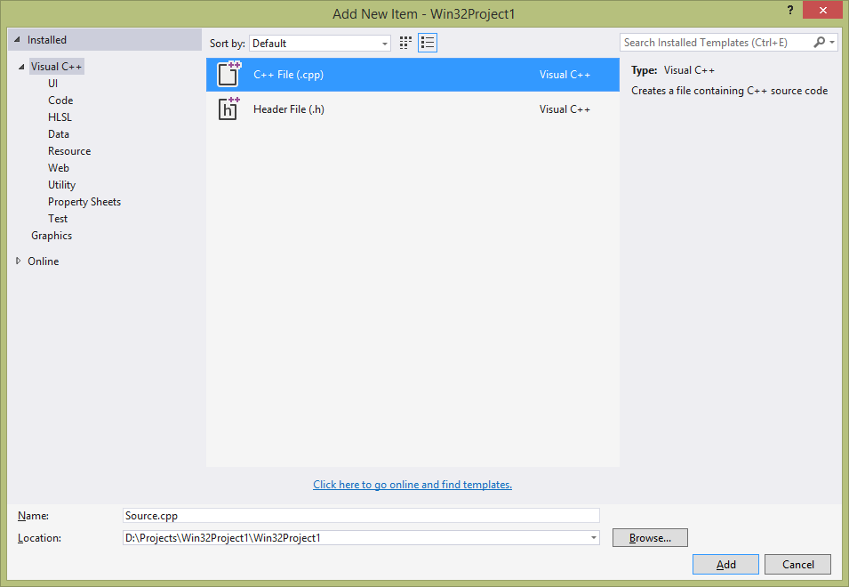
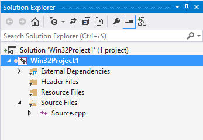

برنامهنویسی ویندوز
الف: مقدمات
تنظیمات پروژه
موقع ساختن یک پروژهی جدید، چه Win32 Project را انتخاب کنیم چه Win32 Console Application را، به این پنجره میرسیم:

انتخاب هر کدام از این گزینهها باعث میشود که تنظیمات پروژهی جدید تغییرات کوچکی بکند. این تنظیمات به راحتی در Project Properties قابل انجام هستند و کمی پایینتر توضیح میدهم که انتخاب هر کدام از اینها چه تأثیری در تنظیمات پروژه میگذارد.
اگر گزینهی Empty project انتخاب شود، ویژوال استودیو هیچ فایلی به پروژه اضافه نمیکند. در صورتی که انتخاب نشود تعدادی فایل مثال که تابع main و راهاندازی ساده را انجام میدهند ساخته میشود. ما برای شروع این گزینه را انتخاب میکنیم و بعد فایلها و توابع را خودمان یکی یکی اضافه میکنیم. پس فعلاً گزینهها را شبیه بالا انتخاب کن و پروژهی جدید را بساز.
پروژهی ساختهشده خالی است و هیچ فایلی در آن نیست:

اگر روی پروژه دکمهی راست را بزنیم و Properties را انتخاب کنیم، پنجرهی تنظیمات پروژه باز میشود. در قسمت General میتوانیم نوع پروژه را انتخاب کنیم:

در صورتی که Configuration type را Application (.exe) انتخاب کنیم، خروجی کامپایل یک فایل اجرایی (exe) است. انتخاب گزینههای Windows application و Console application در موقع ساختن پروژه (شکل ۱) به این انتخاب منجر میشود. انتخاب گزینههای دیگر در ساختن پروژه (DLL و Static library در شکل ۱) باعث انتخاب Dynamic library (.dll) و Static library (.lib) میشود. پروژههای library دارای تابع main نیستند (خودشان به تنهایی قابل اجرا نیستند) بلکه یک مجموعه تابع/کلاس هستند که میشود در سایر پروژهها از آنها استفاده کرد.
اگر صفحهی Linker/System در تنظیمات پروژه را باز کنیم، با تنظیم گزینهی SubSystem میتوانیم انتخاب کنیم که نوع فایل اجرایی Console application باشد و یا Windows application:

در صورتی که SubSystem روی Windows تنظیم شود، باید کد برنامه شامل تابع WinMain باشد و موقع اجرای برنامه این تابع توسط سیستم فراخوانی میشود. در صورتی که Console انتخاب شود، برنامه باید شامل تابع main باشد و موقع اجرای برنامه این تابع توسط سیستم فراخوانی میشود. ضمناً پروژههای Console پنجرهی کنسول را که امکان نمایش و دریافت متن (از طریق std::cin/std::cout یا printf/scanf و ...) را دارد را هم نمایش میدهند. گزینههای دیگر SubSystem برای درایورها و سایر برنامههای سیستمی استفاده میشود.
فراموش نشود که پارامترهای تابع WinMain با تابع main فرق دارد. تابع main را معمولاً به صورت زیر تعریف میکنند:
int main(int argc, char **argv)
{
return 0;
}
در حالی که تابع WinMain به صورت زیر تعریف میشود:
int APIENTRY WinMain(HINSTANCE hInstance, HINSTANCE hPrevInstance, LPTSTR lpCmdLine, int nCmdShow)
{
return 0;
}
در مورد هر دو تابع، اگر مقداری که تابع برمیگرداند 0 باشد یعنی برنامه بدون خطا اجرا شده، مقدار غیر صفر به معنی این است که اجرای برنامه با خطا روبرو شده.
این قسمت ناقص است
Precompiled headers
یکی از تنظیمات پروژه امکان استفاده از precompiled header را فراهم میکند. اگر موقع ساختن پروژه (شکل ۱) گزینهی Empty project انتخاب نشده باشد، یک precompiled header به صورت اتوماتیک به پروژه اضافه میشود و اگر پروژه خالی ساخته شود این header اضافه نمیشود.
معمولاً کامپایل کردن فایلهای header خیلی بزرگ (مثل فایلهای header مربوط به ویندوز) خیلی زمانگیر است. اگر پروژهی ما شامل چندین فایل کد (cpp) باشد، هر کدام از این فایلهای cpp به صورت جداگانه کامپایل میشوند و بعداً همگی با هم link میشوند. موقع کامپایل هر کدام از این فایلها، باید کل headerهایی که در آن فایل include شده دوباره کامپایل شوند. به این ترتیب بیشتر زمان کامپایل برنامه به کامپایل این headerهای ثابت طلف میشود. در پروژههای کوچک زمان کامپایل چندان طولانی نیست ولی در پروژههای بزرگ ممکن است کامپایل حتی ساعتها هم طول بکشد، در این شرایط برای بالا بردن سرعت کامپایل از precompiled header استفاده میشود. این header یک فایل هدر (با پسوند h) است که خود ما آن را مینویسیم و تمام headerهایی که کامپایل آنها زمانگیر است را در آن include میکنیم. بعداً در بالای فایلهای کد این هدر ثابت را قبل از همه include میکنیم، به این ترتیب کامپایلر این هدر را یک بار کامپایل میکند و موقع کامپایل فایلهای کد، با فرض کامپایل این header کامپایل را ادامه میدهد. اگر همهی headerهای بزرگ که به ندرت در پروژه عوض میشوند در این فایل include شوند، زمان کامپایل به شدت کاهش پیدا میکند.
...
Includeکردن headerهای ویندوز
header اصلی ویندوز نامش Windows.h است. با include کردن این header خیلی از امکانات ویندوز (مثل توابع مربوط به مدیریت فایل، thread، ساختن پنجره، گرافیک، ...) include میشوند. البته امکانات دیگری در ویندوز هستند (مثل DirectX، سوکتها، XML parser، امکانات گرافیکی پیشرفتهتر GDI+، اینترنت اکسپلورر و shell) که در داخل Windows.h صدا زده نمیشوند و باید در صورتی که برنامهی ما به آنها احتیاج دارد به صورت جداگانه به پروژه include شوند.
در داخل Windows.h تعداد خیلی زیادی ماکرو وجود دارد. خیلی از این ماکروها برای انواع دادهای (typeها) هستند. در استاندارد زبانهای C و C++ طول انواع داده صراحتاً مشخص نشده. مثلاً یک کامپایلر 64 بیتی میتواند اندازهی int را 32 یا 64 بیت در نظر بگیرد. اندازهی long هم به همین ترتیب است. در حالی که برای ارتباط بین برنامهها باید طول دقیق دادهها مشخص شود. اگر یکی از توابع ویندوز انتظار یک عدد صحیح 32 بیتی را داشتهباشد و برنامه 16 بیت بفرستد، اجرای تابع با خطا مواجه میشود. به همین دلیل باید به جای استفاده از typeهای استاندارد C، ماکروهایی تعریف شود که طول داده در آنها مشخص شده و توابع از این ماکروها استفاده کنند. به عنوان مثال انواع زیر در ویندوز با استفاده از ماکرو تعریف شده:
| اسم ماکرو | طول | توضیح |
|---|---|---|
BYTE | ۸ بیت | یک بایت (unsigned) |
WORD | ۱۶ بیت | یک عدد صحیح unsigned با طول 16 بیت |
DWORD | ۳۲ بیت | یک عدد صحیح unsigned با طول 32 بیت |
INT | ۳۲ بیت | یک عدد صحیح signed با طول 32 بیت |
UINT | ۳۲ بیت | یک عدد صحیح unsigned با طول 32 بیت |
PDWORD | اشارهگر | اشارهگر به یک عدد صحیح unsigned با طول 32 بیت |
LPDWORD | اشارهگر | اشارهگر به یک عدد صحیح unsigned با طول 32 بیت |
CHAR | ۸ بیت | یک کاراکتر 8 بیتی |
WCHAR | ۱۶ بیت | یک کاراکتر یونیکد |
LPSTR | اشارهگر | رشتهی 8-بیتی: اشارهگر به یک کاراکتر ۸ بیتی |
LPWSTR | اشارهگر | رشتهی یونیکد: اشارهگر به یک کاراکتر یونیکد (۱۶ بیتی) |
توضیح:
طول اشارهگر در برنامههای 32 بیتی 32 بیت و در برنامههای 64 بیتی 64 بیت است.
همان طور که واضح است ماکروهای تکراری زیادی وجود دارد (مثلاً
UINTوDWORD) هر دو عدد صحیح 32 بیتی بدون علامت هستند.هر جا اسم ماکرو با P یا LP شروع شد به معنی pointer است. LP مخفف long-pointer است، در زمان ویندوز 16 بیتی بین pointer عادی (فقط آفست) و long-pointer (هم سگمنت و هم آفست) فرق وجود داشت ولی در ویندوز 32 بیتی به بعد چنین تفاوتی وجود ندارد، فقط برای حفظ سازگاری با برنامههایی که قدیم نوشته شدهبوند نامهای قدیمی حفظ شدهاند.
-
برای دیدن لیست طولانیتری از انواع اینجا را ببینید. به طور کلی لازم نیست که همهی این انواع را بلد باشید، یا در کد خودتان از آنها استفاده کنید، بلکه موقعی که از یک تابع ویندوز استفاده میکنید باید ببینید که چه نوع دادهای لازم دارد و مطابق با آن پارامترها را ارسال کنید.
به عنوان مثال، اگر شما از
std::wstringبرای نگهداری رشته استفاده میکنید، ولی برای صدا زدن یک تابع (مثلاًMessageBox) نیاز به تبدیل آن بهLPWSTRدارید، چنین کدی استفاده میشود:std::wstring msg = L"This is my message"; MessageBox(0, msg.c_str(), 0, 0);
برای خیلی از مقادیر ثابت هم ماکرو وجود دارد. مثلاً ماکروی NULL معادل مقدار 0 تعریف شده. یا برای مقادیر TRUE و FALSE به ترتیب مقدارهای 1 و 0 تعریف شده. (اگر از نوع دادهی bool در زبان C استفاده میکنید، از کلمات کلیدی true و false خود زبان استفاده کنید، اگر از ماکروی BOOL ویندوز استفاده میکنید از TRUE و FALSE استفاده کنید. ماکروی BOOL از bool استفاده نمیکند بلکه یک int 32 بیتی است.) یا مثلاً مقادیر ثابت و flagهای مختلفی برای فرستادن به توابع وجود دارد که برای آن تابع معنی مشخصی دارد.
علاوه بر ماکروها، تعداد زیادی تابع هم در ویندوز وجود دارد که در headerها declare شدهاند (یعنی فقط نوع پارامترها و خروجی تابع مشخص شده). در صورتی که از این توابع در برنامه استفاده شود، برنامه کامپایل میشود، ولی برای لینک برنامه، باید مشخص شود که این توابع در کدام فایل اجرایی قرار دارند. اکثر این توابع در DLLهای سیستمی ویندوز که موقع نصب سیستم عامل از روی دیسک نصب به پوشهی WINDOWS\System32 کپی میشوند قرار دارند. برای مثال تابع MessageBox در فایل user32.dll قرار دارد. برای اینکه بشود پروژهای را که از MessageBox استفاده میکند لینک کرد و فایل اجرایی آن را ساخت، باید موقع لینک، فایل user32.lib (که آدرس توابع در user32.dll را در خود دارد) موجود باشد و به لینکر معرفی شود.
تعدادی از فایلهای library پراستفاده (مثل user32.lib که در بالا اشاره شد) موقع ساختن پروژه به صورت اتوماتیک توسط Visual Studio به لینکر معرفی میشوند. برای دیدن لیست نام این فایلها یا اضافهکردن libraryهای دیگر، باید به تنظیمات لینکر مراجعه کرد:

یک راه دیگر برای معرفی فایل library به لینکر (به جز اضافه کردن در تنظیمات لینکر در شکل ۵) نوشتن یک خط راهنمای لینکر (pragma) به صورت زیر در هر کجای برنامه (مهم نیست کجای برنامه باشد) است:
#pragma comment(lib, "user32.lib")
برای دانستن اینکه هر تابع در چه فایل headerی تعریف شده و برای لینک به آن باید چه فایل library مورد استفاده قرار بگیرد، میتوانید به مستندات MSDN برای آن تابع مراجعه کنید. به عنوان مثال مستندات مربوط به تابع MessageBox در آدرس http://msdn.microsoft.com/en-us/library/windows/desktop/ms645505(v=vs.85).aspx قرار دارند که در انتهای توضیحات، جدولی با عنوان Requirements آمده که این فایلها را مشخص کرده:

مستندات MSDN برای ویندوز فعلاً در آدرس http://msdn.microsoft.com/en-us/library/windows/desktop/bg126469.aspx قرار دارند. ضمناً در ویژوال استودیو، با زدن F1 روی نام یک تابع در کد، صفحهی مستندات آن باز میشود.
نوشتن یک برنامهی ساده
تا حالا یک پروژهی خالی ساخته شده، در ادامه:
در تنظیمات پروژه (شکل ۴)، نوع SubSystem را Windows انتخاب کن.
از منوی PROJECT گزینهی Add New Item... را انتخاب کن (یا در Solution Explorer روی اسم پروژه دکمهی راست را بزن و بعد گزینهی Add و بعد New Item... را انتخاب کن.)
-
در لیستی که ظاهر میشود C++ File (.cpp) را انتخاب کن، اسم فایل را همان
Source.cppبگذار و دکمهی Add را بزن.
به این ترتیب حالا باید پروژه تنها یک فایل
Source.cppداشته باشد:
-
در فایل
Source.cppکد زیر را قرار بده:#include <windows.h> int APIENTRY WinMain(HINSTANCE, HINSTANCE, LPTSTR, int) { MessageBox(NULL, L"Hello Windows World!", L"Congratulations", MB_ICONEXCLAMATION); return 0; } برنامه را کامپایل و اجرا کن. پیغام Hello Windows World! در یک دیالوگ نمایش داده میشود و بعد از زدن OK برنامه پایان مییابد.
عبارت
MB_ICONEXCLAMATIONدر کد بالا یک ماکرو است که در header ویندوز معادل مقدار ثابتی تعریف شده که به تابعMessageBoxمیگوید آیکان علامت تعجب را در دیالوگ بکشد. به جای آن میتوانی از flagهایMB_ICONHANDیاMB_ICONQUESTIONیاMB_ICONASTERISKاستفاده کنی. برای دیدن flagهای قابل استفادهی دیگر صفحهی مستندات تابعMessageBoxرا در MSDN ببین.در تنظیمات پروژه (شکل ۴)، نوع SubSystem را Console انتخاب کن.
-
در فایل
Source.cppکد زیر را قرار بده:#include <windows.h> #include <stdio.h> int main(int argc, char **argv) { printf("A dialog will be displayed now.\n"); MessageBox(NULL, L"Hello Windows World!", L"Congratulations", MB_ICONEXCLAMATION); printf("You have clicked OK.\n"); return 0; } برنامه را کامپایل و اجرا کن. پیغام Hello Windows World! در یک دیالوگ و دو خط متن در کنسول نمایش داده میشود و بعد از زدن OK برنامه پایان مییابد.
میتوانی نمونهی کدهایی که در ادامهی این فصل میآید را در همین تابع main جایگزین کد بالا کرده و اجرا کنی.
رشتهها و یونیکد در ویندوز
در ویندوز، مثل زبان C، رشتهها آرایههایی از کاراکترها هستند. انتهای رشته با کاراکتری به مقدار 0 مشخص میشود (به چنین رشتهای null-terminated string میگویند). پس برای نگهداری عبارت Hello به یک buffer به طول حداقل 6 کاراکتر نیاز است و به صورت H E L L O \0 در حافظه قرار میگیرد.
برای نگهداری کاراکتر، دو نوع متغیر در ویندوز حمایت میشوند. یکی CHAR (که معادل char در زبان C است) و اندازهاش 8 بیت است. دیگری WCHAR (مخفف Wide CHARacter که معادل wchar_t در زبان C است) و اندازهاش 16 بیت است. توجه که CHAR برای نگهداری کل کاراکترهای موجود در یونیکد جای کافی ندارد و فقط WCHAR امکان نگهداری کاراکترهای چندین زبان مختلف را به صورت یونیکد UTF-16 دارد. استفاده از CHAR به دلیل عدم حمایت همزمان از چند زبان، مگر برای سازگاری با نرمافزارهای قدیمی، توصیه نمیشود.
برای نگهداری یک رشته، اشارهگری به اولین کاراکتر آن در حافظه (CHAR* یا WCHAR* که در ویندوز به ترتیب ماکروهای LPSTR و LPWSTR هم برایشان تعریف شده) استفاده میشود. برای تعریف یک string literal (مقدار ثابت رشته)، برای رشتههای 8 بیتی مقدار رشته بین دو علامت گیومه (مثل "value") و برای رشتههای 16 بیتی مقدار رشته به صورت L"value" تایپ میشود (حرف L قبل از گیومه اول مشخصکنندهی رشته با طول 16 بیت برای هر کاراکتر است). در هر دو نمونهی فوق، کاراکتر \0 در انتهای رشته توسط کامپایلر C اضافه میشود. به مثالهای زیر توجه کنید:
char a = 't'; wchar_t b = L't'; WCHAR c = L't';
در مثال بالا، متغیرهای a، b و c همگی حرف t را در خود ذخیره کردهاند. متغیر a 8 بیتی و دو تای دیگر (b و c) type یکسانی دارند و هر دو 16 بیتی هستند.
char *str1 = "Hello"; LPSTR str2 = "Hello"; CHAR str3[10]; str3[0] = 'H'; str3[1] = 'E'; str3[2] = 'L'; str3[3] = 'L'; str3[4] = 'O'; str3[5] = 0;
رشتههای str1، str2 و str3 هر سه رشتههای 8 بیتی هستند که مقدار Hello را در خود ذخیره کردهاند. جنس هر سه متغیر دقیقاً یکی است. برای نگهداری str1 و str2 6 بایت و str3 10 بایت از حافظه مصرف میشود.
wchar_t *str4 = L"Hello"; LPWSTR str5 = L"Hello"; WCHAR *str6 = L"Hello"; wchar_t str7[10]; str7[0] = L'H'; str7[1] = L'E'; str7[2] = L'L'; str7[3] = L'L'; str7[4] = L'O'; str7[5] = 0; WCHAR str8[10] = L"Hello";
رشتههای str4، str5، str6، str7 و str8 همگی رشتههای یونیکد (16 بیتی) هستند که مقدار Hello را در خود ذخیره کردهاند. جنس همهای این متغیرها دقیقاً یکی است. برای نگهداری str4، str5 و str6 هر کدام 12 بایت و برای نگهداری str7 و str8 هر کدام 20 بایت از حافظه مصرف میشود.
بعضی از توابع ویندوز پارامترهایی از جنس string دارند. برای مثال تابع MessageBox که یک پیغام را در یک دیالوگ نمایش میدهد، متن پیغام را به صورت رشته دریافت میکند. MessageBox و تمام توابع دیگری که پارامتر string دارند، دارای دو نسخه هستند: یکی 8 بیتی (که در انتهای اسمش حرف A اضافه میشود) و یکی 16 بیتی (که در انتهای اسمش حرف W اضافه میشود). به عنوان مثال، هر دو خط زیر معتبر هستند و کار میکنند:
MessageBoxA(0, "Hello", 0, 0); MessageBoxW(0, L"Hello", 0, 0);
(مورد توجه که تابع MessageBoxA نمیتواند متنی که هم کلمات فارسی و هم کلمات روسی را دارد نمایش دهد چون امکان ذخیرهی چنین متنی در char* وجود ندارد.)
به این ترتیب خود MessageBox یک تابع نیست بلکه یک ماکرو است که با توجه به تنظیمات پروژه، یا به صورت MessageBoxA یا MessageBoxW تعریف میشود. اگر به فایل header ویندوز که این تابع در آن تعریف شده (WinUser.h) رجوع کنید، چنین تعریفی را میبینید:
int WINAPI MessageBoxA(
_In_opt_ HWND hWnd,
_In_opt_ LPCSTR lpText,
_In_opt_ LPCSTR lpCaption,
_In_ UINT uType);
int WINAPI MessageBoxW(
_In_opt_ HWND hWnd,
_In_opt_ LPCWSTR lpText,
_In_opt_ LPCWSTR lpCaption,
_In_ UINT uType);
#ifdef UNICODE
#define MessageBox MessageBoxW
#else
#define MessageBox MessageBoxA
#endif // !UNICODE
تمام توابع دیگری که مثل MessageBox با رشته کار میکنند هم تعریف مشابهی دارند. اگر به تنظیمات پروژه (شکل ۳) نگاه کنید، گزینهای به نام Character Set دارد. اگر مقدار این گزینه Use Unicode Character Set تعریف شود، توابع یونیکد (آنها که آخر اسمشان W دارند به صورت پیشفرض انتخاب میشوند) و در غیر این صورت توابع غیر یونیکد (آنها که آخر اسمشان A دارند). برای سازگاری با زبانهای مختلف، بهتر است از گزینهی یونیکد استفاده کنید و حواستان باشد که موقع تعریف رشته از WCHAR، LPWSTR و L"" استفاده کنید.
ویندوز برای بسیاری از توابع کار با رشته که در کتابخانهی استاندارد C وجود دارند، پیادهسازی خودش را دارد. این توابع به صورت lstrlen، lstrcpy، lstrcmp و ... هستند (به وجود حرف l در ابتدای اسم توابع دقت کنید). این توابع هم از تنظیمات یونیکد پروژه تبعیت میکنند و مثل تابع MessageBox دارای دو نسخه هستند (مثلاً lstrlenA و lstrlenW) که هم با یونیکد و هم با 8 بیتی کار میکنند. بعضی از این توابع امکانات بینالمللی بیشتری نسبت به مشابههای خودشان در کتابخانهی استاندارد C دارند.
یکی از بزرگترین حفرههای امنیتی در برنامهها، به رشتهها و کافی نبودن اندازهی بافر (buffer) رشتهها بر میگردد. به مثال زیر توجه کنید:
WCHAR a[10]; WCHAR b[10]; lstrcpy(a, L"This is a long string");
در مثال بالا، از تابع ltrcpy خواسته شده که رشتهی L"This is a long string" را در متغیر a کپی کند. ولی متغیر a فقط برای رشتهای با طول حداکثر 9 کاراکتر (با احتساب یک کاراکتر که باید برای مشخص شدن پایان رشته \0 شود) جا دارد، در حالی که طول L"This is a long string" خیلی بیشتر است. اما تابع lstrcpy که طول آرایهی a را نمیداند و کاراکترهای دهم، یازدهم، و ... تا انتهای L"This is a long string" را هم کپی میکند. این بایتها احتمالاً در b که در ادامهی حافظه قرار دار کپی میشوند و محتوای آن را هم خراب میکنند و با توجه به اینکه از انتهای b هم فراتر میروند ممکن است جاهای دیگری در استک (stack) را (مثلاً محل قرار گرفتن آدرس برگشت از تابع را) هم خراب کنند. چنین مشکلی در توابع کتابخانهی استاندارد C هم وجود دارند. برای حل چنین مشکلاتی، یک سری توابع جدید کار با رشتهها که همگی طول بافر را هم به عنوان ورودی میگیرند و از نوشتن خارج از بافر تعیینشده پرهیز میکنند در فایل headerی به نام StrSafe.h تعریف شدهاند. برای اطلاع بیشتر به http://msdn.microsoft.com/en-us/library/windows/desktop/ff468908(v=vs.85).aspx مراجعه کنید. برای مثال کد زیر اصلاحشدهی کد مشکلدار بالا با استفاده از این header است:
WCHAR a[10]; WCHAR b[10]; StringCchCopy(a, 10, L"This is a long string");
ویندوز برای تبدیل رشتههای 8 بیتی به 16 بیتی تابع MultiByteToWideChar و برای تبدیل رشتههای 16 بیتی به 8 بیتی تابع WideCharToMultiByte را دارد. از تابع WideCharToMultiByte میشود برای تبدیل رشتههای 16 بیتی به رشتههای با طول متغیر UTF-8 هم استفاده کرد. به عنوان مثال:
WCHAR unicode[20] = L"سلام"; CHAR ansi[100]; CHAR utf8[100]; WideCharToMultiByte(CP_UTF8, 0, unicode, -1, ansi, 100, NULL, NULL); WideCharToMultiByte(1256, 0, unicode, -1, ansi, 100, NULL, NULL); MultiByteToWideChar(1256, 0, ansi, -1, unicode, 20);
در مثال بالا، 1256 کد کاراکتر ست عربی ویندوز است.
ویندوز object-oriented است ولی API آن نه
در داخل ویندوز (هسته و کتابخانهها) تعداد زیادی object تعریف میشود، ولی API ویندوز یک رابط غیر object-oriented دارد. برای همین در خیلی جاهای Windows API ما class نداریم و فقط تعدادی تابع وجود دارد. این توابع روی یک سری object کار میکنند، ولی دسترسی مستقیم به این objectها برای ما وجود ندارد و این objectها را خود سیستم عامل میسازد و مدیریت میکند. وقتی object را ساخت، یک HANDLE از آن object به ما میدهد که در فراخوانیهای بعدی، برای مشخص کردن اینکه میخواهیم عملیات روی کدام object انجام بشود، باید آن HANDLE را هم به تابع مربوطه بدهیم. این HANDLEها یک چیزی شبیه FILE* در کتابخانههای زبان C هستند.
البته یک روش دسترسی object-oriented به امکانات ویندوز هم بعداً طراحی شد به نام COM که مخفف Component Object Model است ولی اینطور نیست که امکان انتخاب بین این دو API شیءگرا و غیرشیءگرا وجود داشتهباشد؛ API بعضی قسمتهای (عمدتاً قدیمیتر) ویندوز (مثل مدیریت thread، پنجره، فایل، گرافیک و ...) به صورت مجموعهای تابع است (که در صورت نیاز HANDLE اشیاء را رد و بدل میکنند) و API بعضی قسمتها(ی عمدتاً جدیدتر) مثل DirectX یا XML parser یا explorer به صورت مجموعهای abstract class. فعلاً کاری به COM نداریم و هر جا لازم شد به سراغش میرویم.
پس، روش کار ما به این صورت است که ابتدا از ویندوز میخواهیم که object مربوطه را بسازد. اگر موفق شد HANDLE مربوط به objectی که ساختهشده را برای ما بر میگرداند. ما هر کاری خواستیم با آن object انجام میدهیم (چون HANDLE مربوطه را داریم) و کارمان هم که تمام شد آن object را پاک میکنیم.
برای مثال، نوشتن در فایل:
HANDLE myfile = CreateFile(L"D:\\filename.txt", GENERIC_WRITE, 0, NULL, CREATE_ALWAYS, 0, NULL); WriteFile(myfile, "Hello", 5, NULL, NULL); CloseHandle(myfile);
توضیحات:
در خط اول، تابع
CreateFileبرای ما یک object از نوع فایل میسازد و HANDLE آن را بر میگرداند که ما این HANDLE را در متغیرmyfileذخیره میکنیم (و در تمام فراخوانیهای بعدی آن را به توابع دیگر میفرستیم). باید مشخصات فایلی که میسازیم را (اسم فایل، نوع دسترسی که خواندن است یا نوشتن و ...) را برای تابعCreateFileمشخص کنیم.در خط دوم میخواهیم 5 کاراکتر
"Hello"را در فایل بنویسیم. برای این کار باید HANDLE مربوط به فایل را هم به تابعWriteFileبدهیم.در خط سوم هم میگوییم که کارمان با این object تمام شده و آن را ببندد.
به عنوان یک مثال دیگر، ساختن دو thread که هر کدام یک تابع جداگانه را همزمان اجرا میکنند:
DWORD dwThreadIdArray[2];
HANDLE hThreadArray[2];
hThreadArray[0] = CreateThread(NULL, 0, Thread1Func, 0, 0, &dwThreadIdArray[0]);
if (hThreadArray[0] == NULL)
{
printf("Unable to create thread 1");
ExitProcess(1);
}
hThreadArray[1] = CreateThread(NULL, 0, Thread2Func, 0, 0, &dwThreadIdArray[1]);
if (hThreadArray[1] == NULL)
{
printf("Unable to create thread 2");
ExitProcess(2);
}
WaitForMultipleObjects(2, hThreadArray, TRUE, INFINITE);
printf("Both threads have finished.");
CloseHandle(hThreadArray[0]);
CloseHandle(hThreadArray[1]);
در مثالهای بالا (فایل و thread)، HANDLE هر کدام از اشیاء در یک متغیر از جنس HANDLE ذخیره شده. بعضی اشیای دیگر، نوع دادهای مخصوص برای HANDLE خود دارند، مثلاً برای نگهداری HANDLE یک پنجره از متغیری با نوع HWND و برای نگهداری HANDLE یک فونت از متغیری با نوع HFONT استفاده میشوند. به طور کلی در ویندوز ماکروهایی که اسم آنها با H شروع میشود، HANDLE هستند.
Calling conventions
ممکن است موقع تعریف توابع با عبارتهایی مثل APIENTRY، WINAPI و CALLBACK مواجه شوی. مثلاً تابع WinMain به صورت int APIENTRY WinMain(...) {} تعریف میشود. اینها همه ماکروهایی هستند به __stdcall. این نوع فراخوانی تابع، مدل زبان پاسکال است. تقریباً تمام توابع ویندوز از __stdcall استفاده میکنند.
Calling convention تعیین میکند که ترتیب گذاشتن پارامترها در استک (stack) چطور باشد، مقدار برگردانده شده از تابع در کجا (رجیستر یا استک) قرار بگیرد، وظیفهی خالی کردن استک به عهدهی کی باشد (تابع یا کسی که تابع را صدا زده). مدل استاندارد C که __cdecl است طوری طراحی شده بود که بشود تابع printf را با تعداد پارامتر متغیر درست کرد، ولی حجم برنامه را بزرگتر میکند. برای اطلاع بیشتر http://msdn.microsoft.com/en-us/library/984x0h58(v=vs.140).aspx را ببین.
این قسمت ناقص است
از امکانات زبان استفاده کنیم یا Windows API
برای بعضی کارها هم ویندوز تابع دارد و هم زبان برنامهنویسی. مثلاً برای دسترسی به فایل هم ویندوز توابع CreateFile، ReadFile، WriteFile و ... را دارد و هم زبان C توابع fopen، fread، fwrite و ... را. سؤال اینجاست که بهتر است از کدام توابع استفاده کنیم؟
فراموش نکن که خود زبان برنامهنویسی (یعنی runtime زبان) برای انجام کارها نهایتاً از توابع سیستم عامل استفاده میکند. توابع سیستم عامل معمولاً دسترسی به کلیهی امکانات و جزئیات سیستم عامل را فراهم میکنند اما توابع زبان ممکن است بعضی امکانات را پوشش ندهند. در عوض کتابخانههای زبان، در همهی محیطها و سیستمعاملهای دیگر هم کار میکنند و رفتار کمابیش یکسانی دارند اما اگر از توابع سیستم عامل ویندوز استفاده شود، port کردن برنامه به لینوکس و Mac OS دشوار میشود.
...
تمرین
برنامهای بنویسید که یک فایل را به آدرس جدیدی کپی کند. اگر فایل مقصد وجود دارد، از نوشتن روی فایل قبلی خودداری شود و پیغام خطای مناسب به کاربر نمایش داده شود. (مستندات توابع مربوط به کار با فایلها را اینجا ببینید)
برنامهای بنویسید که یک عدد را از console بخواند، و مجذور آن را در یک MessageBox نمایش دهد.
برنامهای بنویسید که عبارت فارسی
"الا یا ایها الساقی ادر کاسا و ناولها"را در یک فایل متنی با فرمت UTF-8 و با امضای مناسب ذخیره کند.برنامهای بنویسید که محتوای یک فایل متنی را در یک MessageBox نمایش دهد. برنامه باید به طور اتوماتیک فرمت فایل را که میتواند ANSI، UTF-16 یا UTF-8 باشد تشخیص دهد. برای متنهای ANSI میشود code page مورد نظر کاربر را پرسید و با آن code page نمایش داد.
با کمک مستندات Winsock، برنامهی شبکه (ارسال و دریافت اطلاعات، دریافت فایل از طریق HTTP، چت، وبسرور، ...) بنویسید.
ب: پنجرهها
MessageBox
یکی از پنجرههای ساده که کارهای مختلفی میشود باهاش انجام داد MessageBox است که برای نمایشش از تابع MessageBox استفاده میشود. در بخش قبلی چندین بار از این تابع استفاده کردیم. این تابع چهار پارامتر دارد:
پنجرهی والد: اگر این MessageBox زیرمجوعهی پنجرهی دیگری است، HANDLE آن پنجرهی اصلی اینجا داده میشود، در غیر این صورت
NULL.متن پیام: یک رشته حاوی متنی که قرار است نمایش داده شود. میتواند چند خط باشد که خطها به وسیلهی
\rیا\nاز هم جدا میشوند.عنوان: یک رشته حاوی عنوان پنجره که در title bar (نوار عنوان) نمایش داده میشود. اگر
NULLوارد شود، عنوان پنجره Error نمایش داده میشود.نوع دیالوگ: مشخص میکند که چه دکمهها و آیکانهایی نمایش داده شود. برای دیدن لیست کامل تنظیمات مستندات MSDN را ببینید.
برای مثال برای نمایش یک MessageBox که آیکان علامت سؤال دارد و دکمههای Yes و No را نمایش میدهد:
MessageBox(NULL, L"Are you okay?", NULL, MB_YESNO | MB_ICONQUESTION);
برای اینکه هر دو مقدار MB_YESNO و MB_ICONQUESTION برای نوع MessageBox استفاده شود، از عملیات OR بیتی (|) بین مقادیر آنها استفاده شده. در ویندوز برای تعریف چند flag همزمان همیشه از چنین تکنیکی استفاده میشود.
تابع MessageBox تا زمانی که کاربر یکی از کلیدهای دیالوگ را نزند منتظر میماند و بعد از آن کد کلیدی که زده شده را برمیگرداند. برای فهمیدن اینکه کدام کلید زده شده میشود مقداری که این تابع return کرده را بررسی کرد. مثال:
int button = MessageBox(NULL, L"Are you okay?", NULL, MB_YESNO | MB_ICONQUESTION);
if (button == IDYES) {
printf("You pressed YES.\n");
} else if (button == IDNO) {
printf("You pressed NO.\n");
}
مدیریت طول عمر یک برنامهی GUI
در یک برنامهی غیرگرافیکی، برنامه محاسبات خودش را انجام میدهد و هر جا لازم بود از طریق کنسول (که به آن ترمینال هم میگویند) با کاربر ارتباط برقرار میکند (میخواند و مینویسد). تنها زمانی که برنامه منتظر کاربر میماند، وقتی است که منتظر وارد کردن اطلاعات از کاربر است. در توابعی مثل scanf یا cin::operator<< یک حلقه (loop) وجود دارد که منتظر کاربر میماند تا کلیدهای مورد نظرش را بزند و وقتی به کلید Enter یا Return برخورد کرد، از حلقه خارج میشود و محتوای بافر صفحهکلید (کلیدهایی که در این فاصله زده شده) را به برنامه تحویل میدهد. کاربر در هر لحظه اجازهی وارد کردن بیش از یک داده را ندارد و امکان بازگشت به عقب و اصلاح ورودی قبلی را هم ندارد.
در یک برنامهی GUI، برعکس، برنامه در داخل پنجره (یا پنجرههای) خودش، اطلاعات مختلفی به کاربر نمایش میدهد و ابزارهایی که کاربر با استفاده از آنها با برنامه ارتباط برقرار کند (مثل کنترلهای مختلف text box، scroll bar، دکمهها و ...) را به کاربر نمایش میدهد. بیشتر زمان برنامه به انتظار برای کاربر سپری میشود. هر موقع که کاربر عملی انجام داد که برای برنامه قابل فهم است (مثلاً از صفحهکلید، ماوس و سایر ورودیها استفاده کرد) برنامه باید عکسالعمل لازم را به این عمل کاربر نشان بدهد و دوباره منتظر شود تا کاربر کار بیشتری انجام بدهد. اگر برنامه در زمان کوتاهی به عمل کاربر (که به آن یک event میگویند) عکسالعمل یا پاسخ مناسب را نشان ندهد، باعث ناراحتی کاربر میشود (اصطلاحاً میگویند برنامه قفل کرده، چون پاسخی به رفتار کاربر نشان نمیدهد که کاربر مشاهده کند)، به همین دلیل، هر گونه عملیات طولانی باید در یک thread جداگانه اجرا شود و ترجیحاً در thread اصلی برنامه (که با کاربر در ارتباط است و به آن GUI thread میگویند) کاربر را در جریان پیشرفت این عملیات قرار بدهد. پس بر خلاف یک برنامهی غیرگرافیکی، برنامه سیر خطی طی نمیکند، بلکه در بیشتر زمان خودش منتظر ورودی از کاربر میماند و با توجه به عمل کاربر، عکسالعمل مناسب را به همان ترتیبی که ورودی از کاربر رسیده، انجام میدهد. برای نوشتن چنین برنامههایی، باید یک همکاری نزدیک بین سیستم عامل ویندوز و برنامه اتفاق بیفتد.
برای هر GUI thread، سیستم عامل ویندوز یک «صف پیام» (message queue) نگهداری میکند. هر event که اتفاق میافتد (ورودی کاربر از طریق ماوس و صفحهکلید، پیامهایی که سیستم میخواهد به برنامه بفرستند و ...) به انتهای صف اضافه میشوند. برنامه باید مرتباً از ویندوز بخواهد که پیامهای جدید را از سر صف به او تحویل بدهد تا این پیامها پردازش شوند و عکسالعمل مناسب به آنها نشان داده شود. در زمانهایی که برنامه (GUI thread) مشغول پاسخدادن به پیامها نیست، باید منتظر پیام بعدی از طرف سیستم عامل بماند.
در سیستم عامل ویندوز، همان طور که از نامش پیداست، فقط «پنجرهها» هویت دارند. اگر برنامهای پنجره نداشتهباشد، امکان ارتباط با کاربر، نمایش اطلاعات و دریافت ورودی را ندارد. کشیدن (متن و تصویر) فقط روی یک پنجرهی مشخص ممکن است و هر پیام (message یا event) برای یک پنجرهی مشخص اتفاق میافتد. بنابراین، برای اینکه امکان ارتباط با کاربر را داشتهباشد، یک برنامه باید یک (یا چند) پنجره بسازد. هر پنجره دارای یک تابع پنجره (window procedure) است. این تابع وظیفهی پاسخگویی به پیامهایی که به پنجره میرسد را به عهده دارد. هر موقع یک event برای یک پنجره اتفاق بیفتد، سیستم عامل تابع window procedure آن پنجره را صدا میزند و پیام مناسب را به صورت یک پارامتر در اختیار این تابع قرار میدهد تا پردازش شود. تابع window procedure را باید برنامهنویس بنویسد و برای هر پنجره به ویندوز معرفی کند.
به این ترتیب طول عمر یک برنامهی GUI به شکل زیر است:
یک یا چند پنجره جدید بساز و محتوای مناسب را داخل آنها قرار بده.
-
تا وقتی هنوز پنجرهی اصلی برنامه توسط کاربر بسته نشده:
منتظر پیام بعدی بمان.
پیام را به window procedure پنجرهی مورد نظر تحویل بده تا پاسخ مناسب به آن داده شود.
ضمناً هر پنجره به یک تابع window procedure احتیاج دارد که موقع ساختن پنجره به سیستم عامل ویندوز معرفی میشود. این تابع باید ببیند پیام رسیده به پنجره چیست (آیا یک ورودی از صفحهکلید، ماوس یا ... است؟) و در صورت لزوم پاسخ مناسب را به این پیام بدهد.
یک پروژهی کنسول خالی بسازید، یک فایل کد به پروژه اضافه کنید (مثل فصل قبل) و کد زیر را در تنها فایل پروژه وارد کنید:
#include <Windows.h>
#include <stdio.h>
bool CreateMainWindow();
LRESULT CALLBACK WndProc(HWND hWnd, UINT message, WPARAM wParam, LPARAM lParam);
int main(int argc, char **argv)
{
if (!CreateMainWindow())
{
printf("Unable to create main window.\n");
return -1;
}
// Message loop will be here
return 0;
}
bool CreateMainWindow()
{
return false;
}
LRESULT CALLBACK WndProc(HWND hWnd, UINT message, WPARAM wParam, LPARAM lParam)
{
return 0;
}
کد بالا اسکلت برنامهی گرافیکی ماست. این برنامه قرار است یک پنجره بسازد (در تابع CreateMainWindow)، برای این پنجره یک window procedure معرفی کند (تابع WndProc) و بعد یک حلقهی پیام (messsage loop) در داخل تابع main داشتهباشد تا پیامهای که برای پنجرهی اصلی برنامه میرسد را پردازش کند. در بخشهای بعدی این 3 قسمت که در اسکلت بالا خالی هستند را به برنامه اضافه میکنیم و کم کم برنامه را کامل میکنیم.
نوشتن یک window procedure برای پاسخدادن به eventها
اگر به تعریف تابع WndProc در کد اسکلت بالا دقت کنید، میبینید که این تابع 4 پارامتر ورودی دارد. انواع دادهای LRESULT، UINT، WPARAM و LPARAM همگی اعداد صحیح (integer) هستند و نباید از آنها بترسید. هر بار که یک event اتفاق میافتد، سیستم این تابع را صدا میزند تا برنامهی ما فرصت داشتهباشد پاسخ مناسب به این اتفاق را بدهد. پارامترهای این تابع اینها هستند:
HWND hWnd: مشخص میکند که این پیام برای کدام پنجره است (این event روی کدام پنجره اتفاق افتاده). همان طور که در فصل قبل گفتیم،HWNDیعنی HANDLE برای یک پنجره.-
UINT message: یک عدد است که مشخص میکند چه اتفاقی رخ داده. برای هر نوع اتفاق یک کد جداگانه در نظر گرفته شده. ما معمولاً با این عددها مستقیماً کار نمیکنیم، بلکه از ماکروهایی که برای نامگذاری در headerهای ویندوز تعریف شدهاند استفاده میکنیم. به عنوان مثال:WM_KEYDOWNیعنی یک کلید فشار داده شدWM_KEYUPیعنی یک کلید رها شدWM_LBUTTONDOWNیعنی دکمهی چپ ماوس فشار داده شدWM_RBUTTONUPیعنی دکمهی راست ماوس رها شدWM_MOUSEMOVEیعنی ماوس روی پنجره تکان خوردWM_SIZEیعنی اندازهی پنجره عوض شدWM_MOVEیعنی پنجره در صفحه جابجا شدWM_CLOSEیعنی پنجره بسته شد (مثلاً وقتی کاربر روی دکمهی قرمز ضربدر در گوشهی بالای پنجره میزند، یا کلیدهایALT+F4را میزند)
همان طور که میبینید تمام این ماکروها با
WM_شروع میشوند که مخفف Window Message است. LPARAM lParamوWPARAM wParam: اطلاعات بیشتر در مورد event به ما میدهند. مثلاً موقعی که یک کلید فشار داده شده، مشخص میکنند که کدام کلید فشار داده شده. یا مشخص میکنند که محل ماوس در زمان کلیک کجا بوده و ... اینکه هر کدام از این پارامترها چه معنی میدهند بسته به نوع پیام متفاوت است. در مستندات MSDN توضیحات کامل در مورد این پارامترها آمده. (نگاه کنید به: پیامهای ماوس، پیامهای صفحهکلید، پیامهای پنجره)
تابع WndProc باید یک مقدار برگرداند (return کند) که این مقدار بسته به نوع پیام متفاوت است. برای اینکه بدانید در پاسخ به هر پیام، باید چه مقداری برگردانده شود باید به مستندات MSDN برای آن پیام مراجعه کنید. معمولاً موقعی که یک پیام با موفقیت پردازش شد باید مقدار 0 برگردانده شود.
با دانستن این توضیحات، حالا میتوانیم بدنهی تابع WndProc را به صورت زیر بنویسیم:
LRESULT CALLBACK WndProc(HWND hWnd, UINT message, WPARAM wParam, LPARAM lParam)
{
switch (message)
{
case WM_LBUTTONDOWN:
printf("Left button pressed, x=%d, y=%d\n", LOWORD(lParam), HIWORD(lParam));
break;
case WM_LBUTTONUP:
printf("Left button released, x=%d, y=%d\n", LOWORD(lParam), HIWORD(lParam));
break;
case WM_RBUTTONDOWN:
printf("Right button pressed, x=%d, y=%d\n", LOWORD(lParam), HIWORD(lParam));
break;
case WM_RBUTTONUP:
printf("Right button released, x=%d, y=%d\n", LOWORD(lParam), HIWORD(lParam));
break;
case WM_KEYDOWN:
printf("Key pressed, key=%d\n", wParam);
break;
case WM_KEYUP:
printf("Key released, key=%d\n", wParam);
break;
case WM_SIZE:
printf("Window resized, new size %dx%d\n", LOWORD(lParam), HIWORD(lParam));
break;
case WM_MOVE:
printf("Window moved, x=%d, y=%d\n", LOWORD(lParam), HIWORD(lParam));
break;
default:
return DefWindowProc(hWnd, message, wParam, lParam);
}
return 0;
}
کاری که کد بالا انجام میدهد این است که با توجه به اینکه پیام چیست، یک پیغام در کنسول چاپ میکند. در صورتی که پیامی غیر از آنهایی که در برنامه پردازش میشد به تابع رسید، به جای اینکه آن را دور بیندازیم، تابع DefWindowProc را صدا میزنیم تا پاسخ پیشفرض ویندوز به آن پیام داده شود (همیشه باید همین طور عمل شود). همان طور که میبینید برای پیدا کردن محل ماوس، سایز پنجره و کد کلیدی که فشار داده شده، از پارامترهای lParam و wParam استفاده کردیم. برای جزئیات بیشتر میتوانید به مستندات این پیامها نگاه کنید: WM_LBUTTONDOWN، WM_KEYDOWN، WM_SIZE، WM_MOVE
متأسفانه هنوز نمیتوانید این برنامه را اجرا کنید و با آن بازی کنید، چون هنوز کد مربوط به message loop و ساختن پنجره نوشته نشده.
این قسمت ناقص است
حلقهی پیام (message loop)
حلقهی پیام را به شکل زیر در تابع main پیادهسازی میکنیم:
int main(int argc, char **argv)
{
if (!CreateMainWindow())
{
printf("Unable to create main window.\n");
return -1;
}
MSG msg;
while (GetMessage(&msg, NULL, 0, 0))
{
DispatchMessage(&msg);
}
return 0;
}
MSG یک struct است که اطلاعات مربوط به یک پیام را در خودش نگه میدارد. این اطلاعات شبیه پارامترهای تابع WndProc است (HANDLE پنجره، نوع پیام، امل: پنجرهی صاحب (گیرندهی) پیام، نوع اتفاقی که رخ داده (حرکت ماوس، کلیک، فشردن کلید، رها شدن کلید، ...) است. پیام ممکن است اطلاعات بیشتری داشته باشد (مثلاً محل ماوس، یا کلیدی که فشار داده شده و ...).
این قسمت ناقص است
ساختن یک پنجره
...
این قسمت ناقص است
بازی کردن با پنجره
...
این قسمت ناقص است
نقاشی ساده با GDI
...
این قسمت ناقص است
استفاده از resourceها
...
این قسمت ناقص است
اضافه کردن منو
...
این قسمت ناقص است
درست کردن یک برنامه شبیه notepad
...
این قسمت ناقص است
ساختن پنجرههای فرزند
...
این قسمت ناقص است
Common controls
...
این قسمت ناقص است
استفاده از دیالوگ
...
تمرین
برنامهی نقاشی را اصلاح کنید که با چند پنجره کار کند
برنامهی نقاشی، ذخیره کند
نقاشی شبکه یکی آبی یکی قرمز.